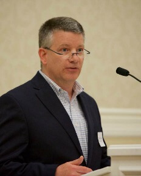

| pclauss@nd.edu | |
| (574) 631-7381 | |
| 311 Decio Hall | for meetings | |
| 300 O'Shaughnessy Hall | for mail | |
| Office Hours TR 9:30–11:am and by appointment |
About
Patrick Clauss studies the relationships among argumentation theory, composition theory and pedagogy, and rhetoric. He is the author of iclaim: Visualizing Argument, and he teaches Writing and Rhetoric and a graduate practicum on the teachingof writing.
He has recently worked with the College Board, serving as a consultant regarding AP examinations and high school and college curricula. In the spring of 2014, he was named a recipient of the Rev. Edmund P. Joyce, C.S.C. Award for Excellence in Undergraduate Teaching.
Recent Publications
- "Transparent Assignment Design." Wakonse Conference on College Teaching. Shelby, Michigan. 25 May 2018.
- "University Writing Program: University of Notre Dame." Writing Program Architecture: Thirty Cases for Reference and Research. Edited by Bryna Siegel Finer and Jamie White-Farnham. Utah State University Press. 2017.
- "Live, Remixed, and Flexible Rhetorics for Social Change." Conference on Community Writing. Boulder, CO. 21 October 2017.
- "Alternate and Flipped Finals." Kaneb Center for Teaching and Learning Workshop. University of Notre Dame. 28 September 2017.
- "Enhancing Student Motivation with Authenticity and Caring Actions." Kaneb Center for Teaching and Learning Workshop. University of Notre Dame. 15 September 2017.
- "Tell Your Story: An Affective Approach to Undergraduate Education." Keynote Speaker. Kaneb Center Outstanding Graduate Student Awards. University of Notre Dame. 12 April 2017.